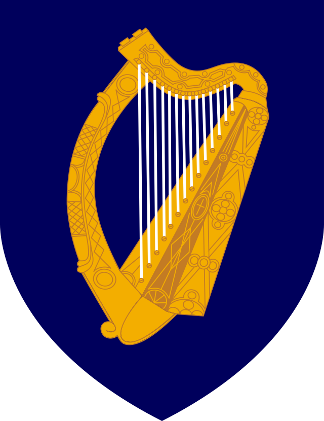

Dia duit
Gaeilge · IrishWhere should we start?
StudentPath · Irish immigration guidance
POLICY WORKSPACE · DEMO
Good guidance starts here.
Prepare policy documents for review and indexing.
Preview workspace · No authenticated session or server storage. Files stay in this browser tab and are not uploaded or indexed.
Review queue
0 documentsA clean slate.
Documents you stage will appear here.
Nothing is published automatically.
Draft → Review → Index → Available to the assistant